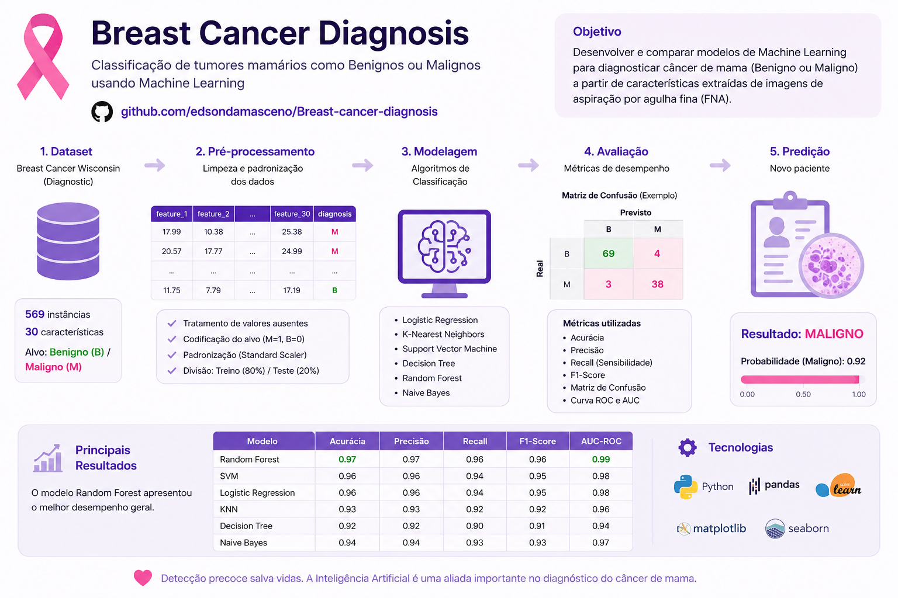
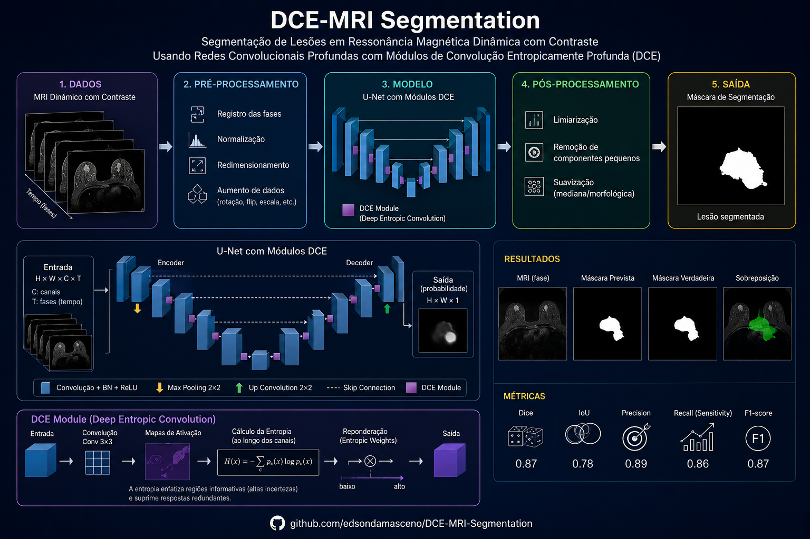
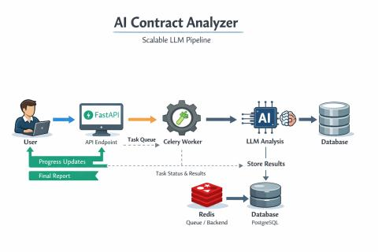
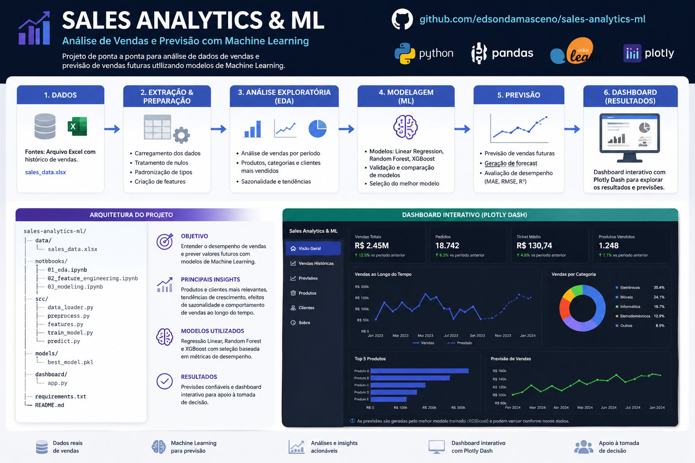
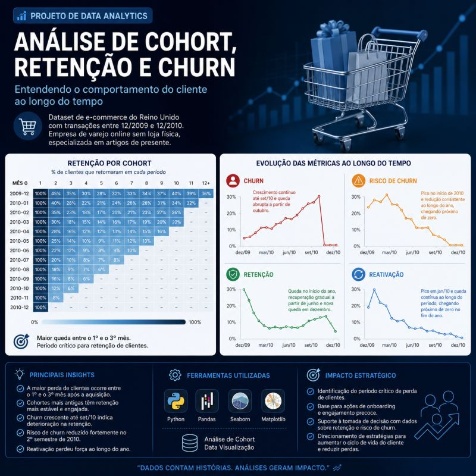
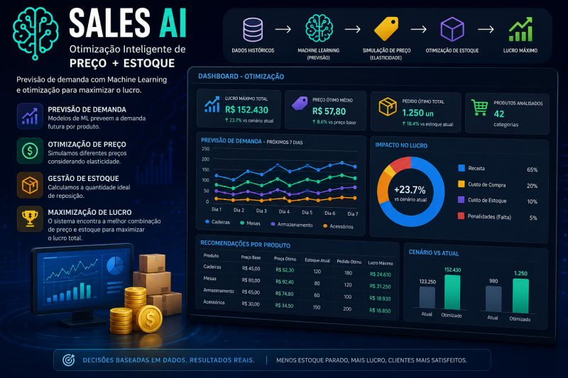

Profissional focado em Ciência de Dados, com experiência em Análise de Dados, Machine Learning, Visão Computacional e desenvolvimento de soluções orientadas por dados para apoio à tomada de decisão.
Vamos ConversarSou um profissional com sólida formação em dados e experiência prática no desenvolvimento de soluções de Machine Learning, Deep Learning e Visão Computacional, atuando de forma end-to-end — desde a coleta, tratamento e análise exploratória de dados até a construção, validação e deploy de modelos em produção. Tenho forte atuação em análise de dados e modelagem estatística, trabalhando com grandes volumes de dados para identificar padrões, gerar insights estratégicos e apoiar a tomada de decisão orientada por dados. Possuo experiência na criação de dashboards e definição de métricas de performance (KPIs), sempre com foco em impacto real no negócio. Participei do desenvolvimento de projetos envolvendo redes neurais convolucionais (CNNs) customizadas, otimização de hiperparâmetros, seleção de features com algoritmos evolutivos e aplicações em visão computacional, incluindo análise de imagens médicas. Além disso, tenho experiência na construção de pipelines escaláveis com APIs e processamento assíncrono, integrando modelos de IA em aplicações reais. Sou motivado por desafios técnicos e aprendizado contínuo, buscando constantemente aplicar técnicas avançadas de Inteligência Artificial, Machine Learning e análise de dados — como EDA, regressão, clusterização e modelagem estatística — para resolver problemas complexos e gerar valor estratégico.
Mestrado em Engenharia Elétrica
Fevereiro 2020 - Setembro 2022
Teresina - Piauí - Brasil
Análise de Dados, Machine Learning e Deep Learning
Bacharelado em Sistemas de Informação
Fevereiro 2014 - Dezembro 2017
Picos - Piauí - Brasil
Análise de Sistemas, Bancos de Dados e Programação

Pipeline completo de ML para classificação médica com alta acurácia (>90%), incluindo feature engineering e validação robusta.
Ver Projeto
Segmentação tumoral em imagens médicas usando abordagens de Deep Learning.
Ver Projeto
Sistema completo de IA para análise automatizada de contratos utilizando LLMs, RAG e processamento assíncrono.
Ver Projeto
Projeto de Machine Learning para classificação de registros de vendas com o objetivo de identificar transações de alto lucro.
Ver Projeto

Sistema de Inteligência Artificial para previsão de demanda e otimização de preço e estoque com foco em maximização de lucro.
Ver ProjetoEmail: edsondamasceno11@gmail.com